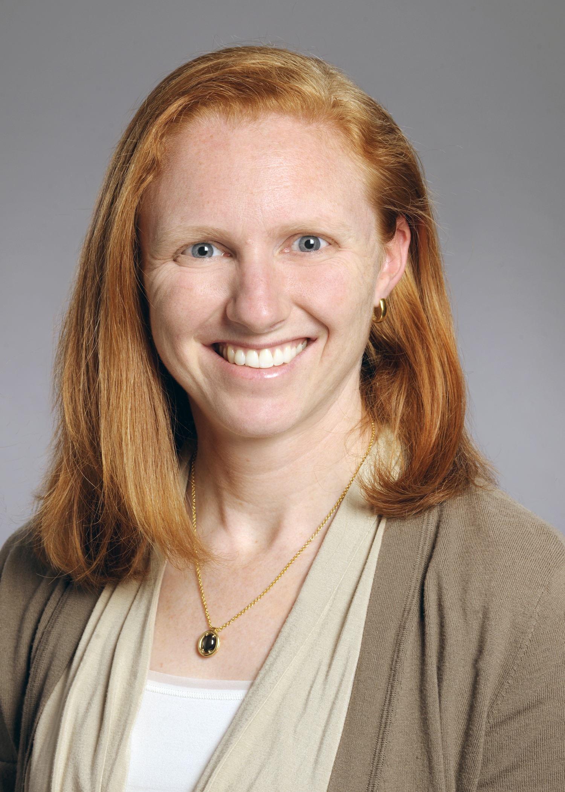
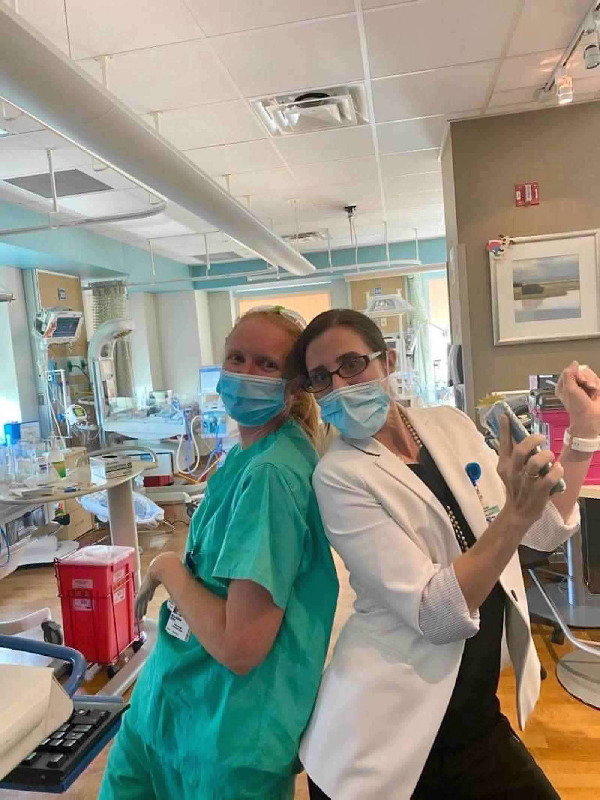
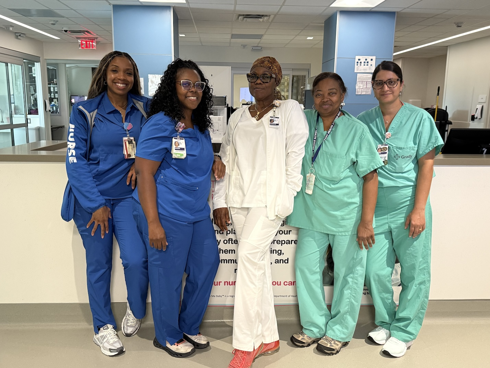

The Dr. Allison Rose Memorial Fund provides up to $25,000 per year in tuition assistance to nurses pursuing a Neonatal Nurse Practitioner degree.

Honoring Allison's legacy through education and care
The Dr. Allison Rose Memorial Fund was founded to advance neonatal nurse practitioner (NNP) training in Atlanta, Georgia. There are NNP shortages in Atlanta-area neonatal ICUs, as is common throughout the country. The Fund aims to address this shortage by providing financial support for Atlanta-area RNs to enroll in NNP programs and thus increase the talent pool available to our NICUs.
The cost of Neonatal Nurse Practitioner programs can be a significant barrier to entry for many qualified candidates. The Fund is specifically designed to help "bridge the gap" for qualified candidates who otherwise would be financially unable to attend an NNP program. Even if you have never previously considered pursuing an NNP degree, talk with folks you work with - nurse managers, nurse educators, and existing NNPs - to see if this might be a good fit for you.
The Fund was created to honor the legacy of Dr. Allison Thomas Rose, who was an Assistant Professor in Pediatrics in the Division of Neonatology at Emory University School of Medicine. From medical school onwards, Dr. Rose received all of her medical training at Emory University, including appointments as Pediatric Chief Resident from 2016-17 and Co-Chief Fellow (Division of Neonatology) from 2019-20. Upon completion of her Neonatology training, Dr. Rose joined the faculty at Emory University School of Medicine, serving as an attending Neonatologist in the Emory University-affiliated NICUs at Grady Memorial Hospital, Emory University Midtown Hospital and Children’s Healthcare of Atlanta Egleston Hospital from 2020-2025.
Dr. Allison Rose also served as the Associate Medical Director for the NICU at Grady Memorial Hospital. Her clinical research focused on necrotizing enterocolitis (NEC) and the NEC Society recognizes this work through the Allison Rose Advocacy Scholarship. Dr. Rose was a committed advocate for infant and maternal health. Her work with the Georgia Chapter of the American Academy of Pediatrics led to nearly $500,000/year being allocated to the 2022-23 Georgia state fiscal budget for Medicaid coverage of donor human milk for inpatient use in premature infants.

Who can apply for the Allison Rose Memorial Fund scholarship
Must be a currently licensed Registered Nurse (RN) with recent neonatal nursing experience.
Must be currently or recently employed at the CHOA/AMBH, Emory Midtown, or Grady NICUs, and must commit to returning to work for this neonatal practitioner group for a minimum of 3 years after graduation.
Must be applying to or currently enrolled in a graduate program leading to Neonatal Nurse Practitioner (NNP) certification. Awards are contingent on acceptance to a program.

Help us continue Allison's legacy of advancing neonatal care
We graciously accept donations of all sizes. The fund is organized as a private foundation, and has been granted 501(c)(3) tax-exempt status by the IRS. 100% of all donations are tax-deductible under Internal Revenue Code Section 170. The fund's EIN is 33-4988146.
We accept online donations as well as paper checks. All contributions are treated as unrestricted and will be used to support the organization’s charitable scholarship mission.
Please make checks out to "Dr Allison Rose Memorial Fund, Inc" and mail to:
The Dr. Allison Rose Memorial Fund, Inc.
c/o Ian Rose
212 4th Ave
Decatur GA, 30030
Thank you for your support!
Questions or Concerns? We are here to help!
The Dr. Allison Rose Memorial Fund, Inc. is incorporated within the state of Georgia and has applied for 501(c)(3) nonprofit status with the IRS. For any questions about the scholarship fund, please contact Ian Rose, founder and chairman of the board of directors.